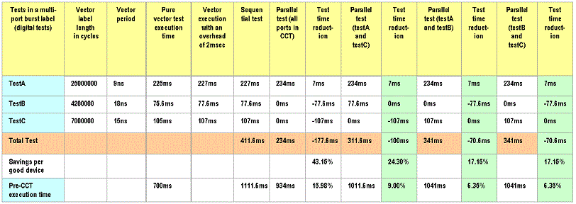

Example of Tests in a Multi-port Burst Label
The following table shows a comparison of sequential and parallel testing and how concurrent (parallel) testing (using multi-port burst) saves test time.

It is evident from this example that the dominant port is related to TestA. It is also of great interest to note how the overall test time is effected by specific test execution.
While the execution of all ports (A,B, and C) in parallel offer a test time savings of over 43%, the actual expectation of this test program is only about 16%. Because of this difference between test times, the results of Design For Test (DFT) effectiveness should be measured against the overall test time.
On average, the expected test time savings per good device is about 20%.
The major advantage of CCT is the combination of CCT with multi-site test where the reduction becomes noticeable.
Overall, the benefit of multi-site and CCT can be calculated using the equation:
Total test time = {Original test time}*{1 - (multi-site savings)}*{1 - (CCT savings)}
Example
For example, consider a test program running in serial mode that takes 4 sec.
- Using only a CCT Test saves you 20% (which is a factor of 0.2).
The test time will thus be reduced to 4*(1-0.2) = 3.2 sec.
- If you do only a dual-site test which saves you 40% test time (factor 0.4), but do not do it as a ConCurrent test, then the test time will be reduced to 4*(1-0.4) = 2.4 sec.
- If you do the dual-site test in the CCT setup, then the final test time per site will
be:
4*(1-0.2)*(1-0.6) = 1.92 sec.
Functional changes
- Introduced before SmarTest 6.3.2